TCM bietet über eine einfache Benutzerschnittstelle verschiedene Management-Funktionalitäten
für Testfälle. Es existieren drei Benutzer-Rollen die unterschiedliche Zugriffsebenen definieren:
Einmal eingeloggt, sieht MGR 1-6; SQE 1-2, 4, 6; SQA 2,4,6.
Test Case Maintenance (Testfall-Verwaltung)
Über den Eintrag "Test Case Maintenance" können die Beschreibungen der Testfälle geändert, Testfälle
gelöscht oder hinzugefügt werden.
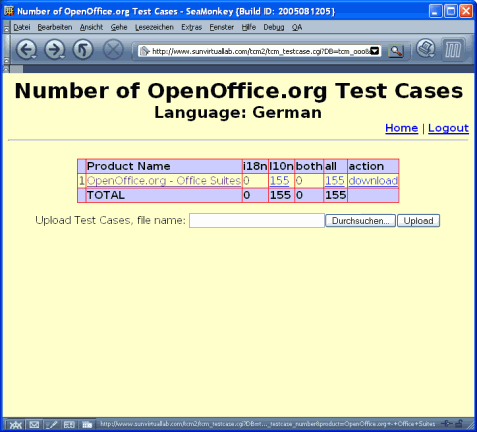
Innerhalb TCM können Testfälle für verschiedenen Produkte verwaltet werden.
Das Produkt kann auf dieser Seite ausgewählt werden. Da zur Zeit nur Testfälle für
OpenOffice.org verwaltet werden, steht nur ein Eintrag zur Auswahl.
Über den Download-Link können alle Testfälle eines Produktes als Textdatei heruntergeladen werden.
Diese Datei kann dann geändert und per Upload wieder in das TCM eingepflegt werden. Die
Zuordnung der Änderungen erfolgt dabei über eine interne TestCase-ID.
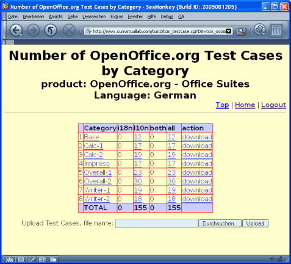
Nach der Auswahl des Produktes gelangt man in die Kategorie-Übersicht.
Auch hier ist es wieder möglich, alle Testfälle einer Kategorie als Textdatei herunter oder
Änderungen hoch zu laden. Per Klick auf einen Kategorie-Eintrag gelangt man zu den einzelnen
Testfall-Beschreibungen.
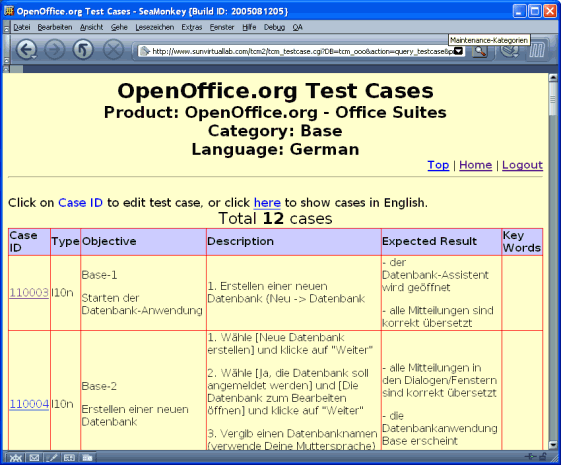
Im Beispiel werden die Testfälle für das Base-Modul aufgelistet.
Klicken Sie auf die Case-ID, um einen Testfall zu bearbeiten.
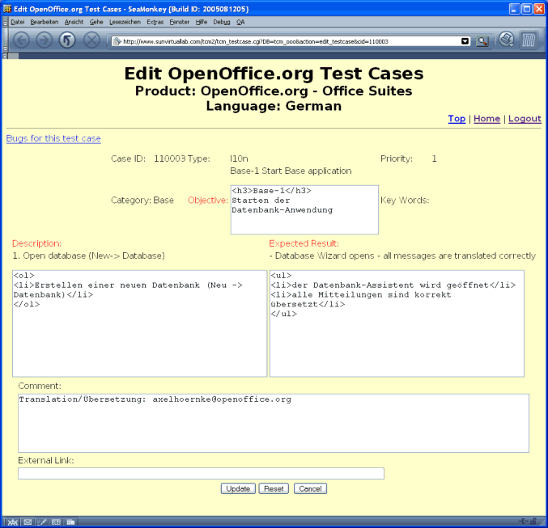
Ändern sie hier die Beschreibung des Testfalles. Zum Vergleich bei einer Übersetzung wird der englische
Originaltext eingeblendet. Im Kommentar-Feld können Hinweise für weitere Bearbeitungen hinterlassen werden.
Die Änderungen werden gespeichert, nachdem Sie auf die Schaltfläche "Update" gedrückt und das nachfolgende
Kontrollfenster ebenfalls mit "Update" bestätigt haben.
Test Report
Über den Eintrag "Test Report" können Zusammenfassungen über die Testergebnisse eingesehen werden.
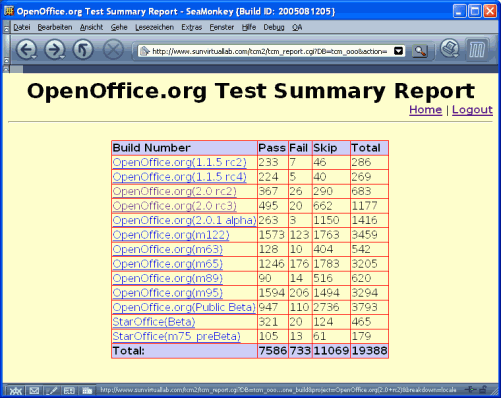
Zunächst gelangt man in die Übersicht aller bisher getesteten Builds (Versionen). Die Tabelle enthält
die Anzahl der durchgeführten Tests sowie die Verteilung der Testergebnisse ("passed" - bestanden,
"fail" - nicht bestanden, "skipped" - Test übersprungen).
Über den Link zu einer Versionsnummer gelangt man zu einer detailliertern Übersicht.
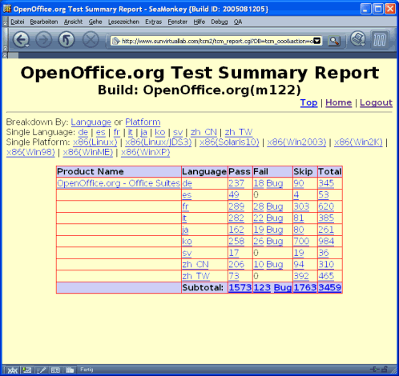
Hier bieten sich verschiedene Sortier-Optionen. Über die Links innerhalb der Tabelle gelangt man zu den
Ergebnissen der einzelnen Testfälle dieser Kategorie.
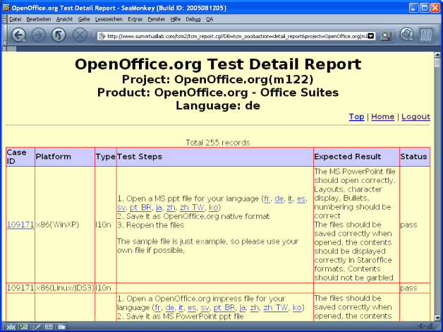
Die Liste der Testergebnisse beinhaltet die (englische) Beschreibung, das Testergebnis und die
Zuordnung zur Kategorie (z.B. zur Plattform). Durch einen Klick auf die Case-ID gelangt man zu detaillierten
(deutschen) Beschreibung.
Test Assignment Maintenance (Zuweisung von Testfällen)
Benutzer mit der Manager-Rolle können hier Testfälle zur Bearbeitung zuweisen. Es können entweder Tests
für ganze Plattformen oder einzelne Kategorien an einen Tester vergeben werden.
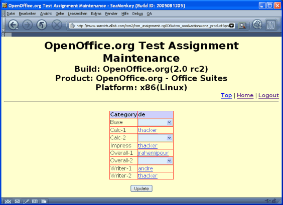
Test Result Update (Testresultate aktualisieren)
Über diesen Menüpunkt können die zum Test zugewiesenen Fälle eingesehen und die Ergebnisse erfasst werden.
Nach Auswahl eines zu testenden Builds gelangt man in die Übersicht der zugewiesenen Testfälle.
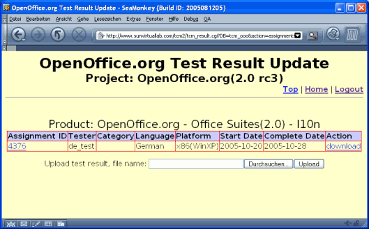
Hier kann eine Liste der zugewiesenen Testfälle über den Link "Download" heruntergeladen werden.
In dieser Textdatei sind nur die Assignment- sowie die CaseID und das zugehörige Testergebnis hinterlegt.
Die Testergebnisse können in der Datei geändert und später über "Upload" gesammelt hochgeladen werden.
Über den Link zur "Assignment-ID" gelangt man zur Detail-Übersicht der zugewiesenen Testfälle.
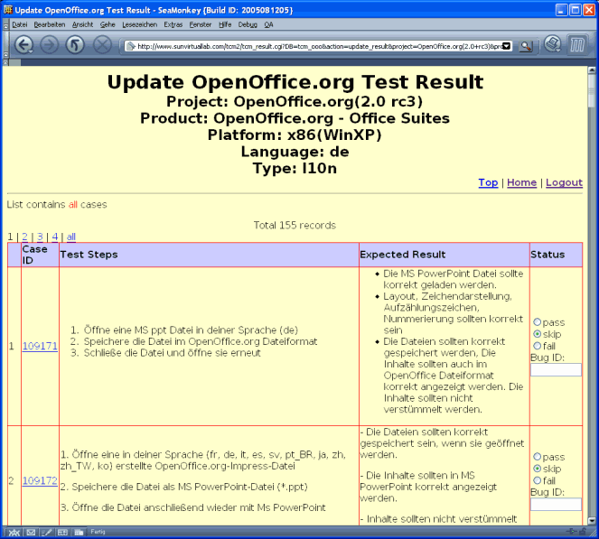
Die einzelnen Fälle können jetzt online bearbeitet werden. Für jeden Testfall wird das Ergebnis ("pass" - erfolgreich,
"fail" - nicht erfolgreich oder "skipped" - übersprungen) erfasst. Traten bei einem Test Fehler auf, sollte
immer eine zugehörige Issue-ID angegeben werden.
Die Ergebnisse werden nach Drücken der Schaltfläche "Update" (am Ende der Seite) gespeichert. Die Ergebnisse sollten
auch während der Arbeit immer wieder gespeichert werden, um einen Datenverlust zu verhindern, falls die
Verbindung abbrechen sollte. Die Testergebnisse können jederzeit nachbearbeitet werden.
Property Maintenance (Verwaltung der Einstellungen)
Über diesen Menüpunkt können Manager neue Nutzer anlegen oder vorhandene Nutzer verwalten.
Set Password (Passwort setzen)
Dieser Menüpunkt erlaubt es allen Benutzern, ihr Passwort zu ändern
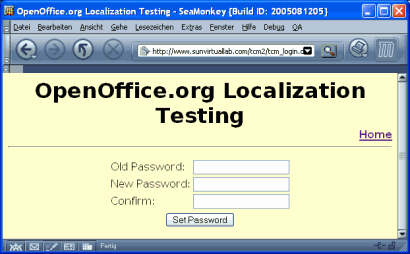